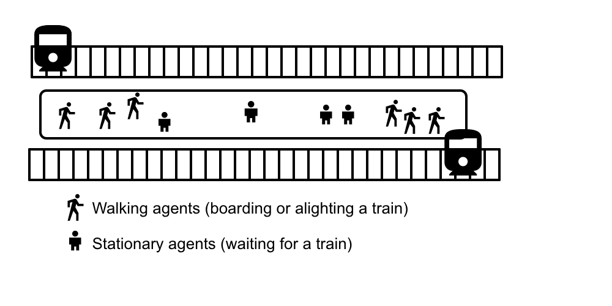
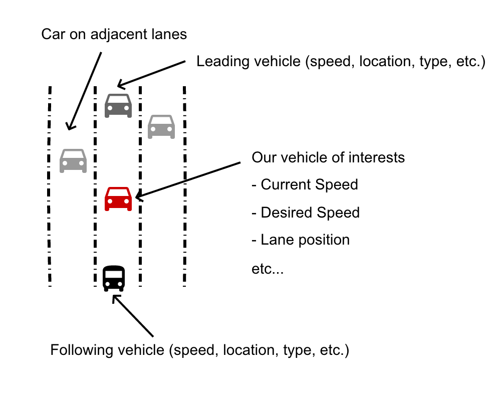

Part 4 projects: bringing together machine learning and simulation in transportation
Minh Kieu
Transport Research Centre, University of Auckland
These slides:
https://leminhkieu.github.io/p/2019-Part4-Projects.html

About me
Currently: Research Fellow at the University of Leeds (UK)
Soon: Lecturer at the University of Auckland
Research Interests
- Agent-Based Modelling
- Machine Learning
Project 1: Estimating traffic speed from raw Bus GPS data
Data available from Brisbane, Australia
Approach: Remove the time buses spent at bus stops, then estimate the traffic speed in relation with bus speeds
Requirements: Moderate programming and data analytics skills
Project 2: Agent-Based Modelling of a train platform
Approach: Extend an existing Agent-Based Model (developed by me) to develop a model of a train platform in Auckland
Requirements: Good object-oriented programming skills, preferably Python
Project 3: Deep Learning car-following model
Data available from motorways in Germany
Objective: Develop an AI-based car-following model
Project 3: Deep Learning car-following model
Approach: Use multiple variables (examples from the figure) to predict the acceleration/speed of a following vehicle
Requirements: Moderate programming and data science skills, preferably Python